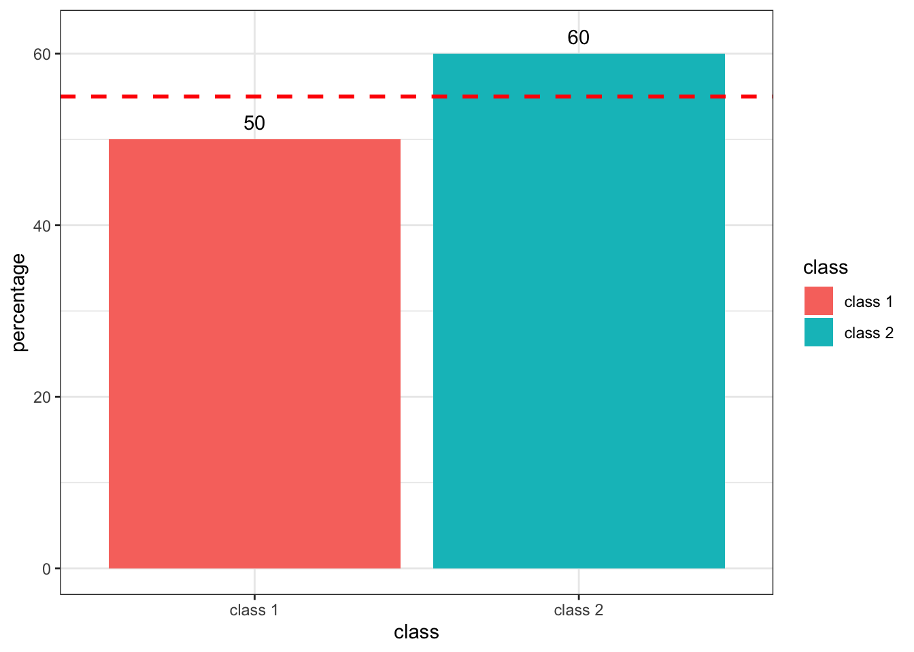
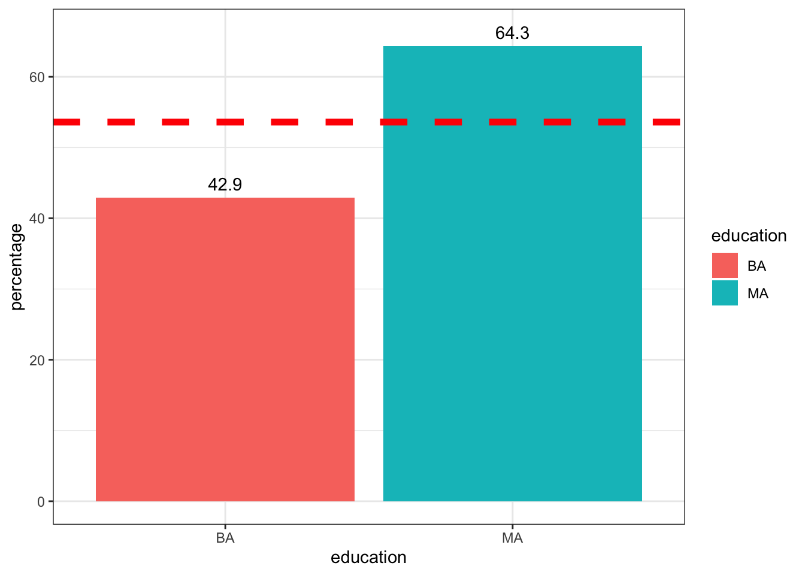

I recently learned that calculating the average of percentages is NOT similar to calculating the average of numbers.
I am conducting data analysis training sessions once every two months and at the end of each class I ask students if they want to join the advanced data analysis class that I organize once each year. Below data frame contains part of the actual data which I collected from those who have participated in my classes in the past few months which basically has three variables as following:
TRUE indicates a trainee is eager to participate in
the advanced class and FALAE indicates a trainee
doesn’t want to attend in the advanced class.df <- data.frame(
class = c("class 1","class 2","class 1","class 1","class 2","class 2","class 1","class 1","class 1","class 2","class 1","class 1","class 2","class 2","class 2","class 1","class 1","class 1","class 1","class 2","class 1","class 1", "class 1","class 2","class 1", "class 1", "class 1","class 2"),
education = c("BA","MA","BA","BA","MA","MA","BA","BA","BA","MA","MA","MA","BA","MA","BA","MA","BA","BA","MA","MA","BA","BA","MA","MA","BA","MA","BA","MA"),
advanced_class = c(TRUE,TRUE,FALSE,TRUE,FALSE,TRUE,TRUE,FALSE,TRUE,TRUE,FALSE,TRUE,FALSE,TRUE,FALSE,FALSE,FALSE,TRUE,TRUE,TRUE,FALSE,FALSE,FALSE,FALSE,TRUE,TRUE,FALSE,TRUE)
)## class education advanced_class
## 1 class 1 BA TRUE
## 2 class 2 MA TRUE
## 3 class 1 BA FALSE
## 4 class 1 BA TRUE
## 5 class 2 MA FALSE
## 6 class 2 MA TRUE
## 7 class 1 BA TRUE
## 8 class 1 BA FALSE
## 9 class 1 BA TRUE
## 10 class 2 MA TRUE
## 11 class 1 MA FALSE
## 12 class 1 MA TRUE
## 13 class 2 BA FALSE
## 14 class 2 MA TRUE
## 15 class 2 BA FALSE
## 16 class 1 MA FALSE
## 17 class 1 BA FALSE
## 18 class 1 BA TRUE
## 19 class 1 MA TRUE
## 20 class 2 MA TRUE
## 21 class 1 BA FALSE
## 22 class 1 BA FALSE
## 23 class 1 MA FALSE
## 24 class 2 MA FALSE
## 25 class 1 BA TRUE
## 26 class 1 MA TRUE
## 27 class 1 BA FALSE
## 28 class 2 MA TRUELet’s find the percentage of each group who are eager to participate in the advanced class.
##
## FALSE TRUE
## class 1 50 50
## class 2 40 60Above table shows that 60% of trainees from class 2 and 50%
of trainees from class 1 want to join the advanced class. Does
this mean that (60%+50%)/2=55% of
all trainees are intended to join the advanced class?
library(ggplot2)
theme_set(theme_bw())
round(prop.table(table(df$class, df$advanced_class),1)*100,1) %>%
data.frame() %>%
rename(class = Var1,
advanced_class=Var2,
percentage = Freq) %>%
filter(advanced_class!=FALSE) %>%
# mutate(average = sum(percentage)/2) %>%
ggplot(aes(x=class, y=percentage, fill = class)) + geom_col() +
geom_text(aes(label = percentage), nudge_x=0, nudge_y = 2) +
geom_hline(yintercept = (50+60)/2, linetype = "dashed", color = "red", size = 1)
The answer is No. Because each group does not represent equal numbers of trainees.
##
## class 1 class 2
## 18 10As shown above, there are 18 trainees from class 1 and 10 trainees from class 2. It means that 60% of those form the second class represents only 6 trainees and 50% of those from the first class represents 9 trainees.
(50 / 100) x 18 = 9(60 / 100) x 10 = 6From the above result we can say that 9+6=15 out
of all 18+10=28 trainees in both classes said they
would like to join the advanced class. Therefore we can say that
(15/28)*100=53.57% of all trainees want to join the
advanced class.
##
## FALSE TRUE
## 46.43 53.57It can be observed that there is an inconsistency between
(6+9/28)*100 =53.57% and
(60%+50%)/2=55%. Hence, the
temptation of averaging percentages can lead to an inaccurate
result.
When sample size in both groups is equal, however, the average of percentages agrees with the accurate percentage calculation.
For example, the above data shows that 64.29% of trainees with a master degree would like to join the advanced data analysis class and this proportion is 42.86% among those with a bachelor degree.
##
## FALSE TRUE
## BA 57.14 42.86
## MA 35.71 64.29Here the average of both percentages is
(64.29%+42.86)/2=53.57% which is
equal to accurate calculation of the percentage of trainees who
are intended to join the advanced data analysis training.
round(prop.table(table(df$education, df$advanced_class),1)*100,1) %>%
data.frame() %>%
rename(education = Var1,
advanced_class=Var2,
percentage = Freq) %>%
filter(advanced_class!=FALSE) %>%
ggplot(aes(x=education, y=percentage, fill = education)) + geom_col()+
geom_text(aes(label=percentage), nudge_y = 2) +
geom_hline(yintercept = (42.9+64.3)/2, linetype = "dashed", color = "red", size = 2 )
The reason is that there is an equal number of trainees with master and bachelor degrees.
##
## BA MA
## 14 14Average of percentages would lead you to an inaccurate result unless all groups represent the equal sample size. The reason is simple, when two groups are different in size then the same percentage in both groups will give you two different numbers. For example, 10% of a group of 100 individuals is 10 while 10% of a group of 150 individuals is 15.